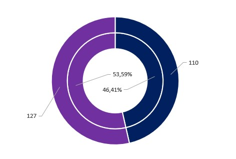
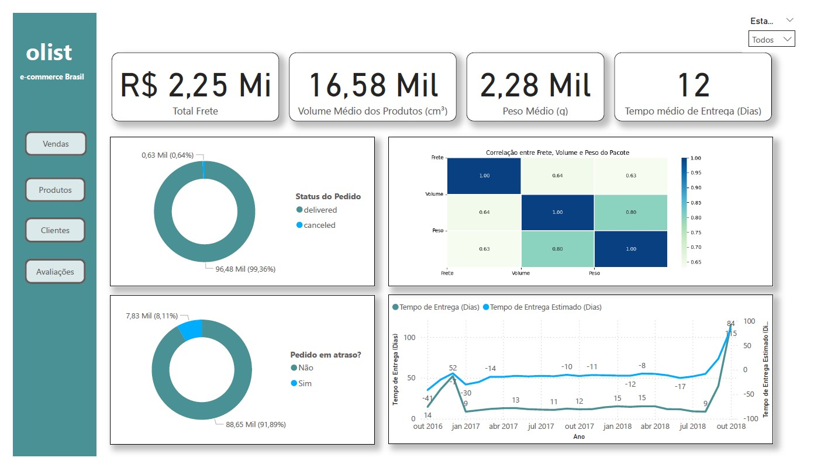
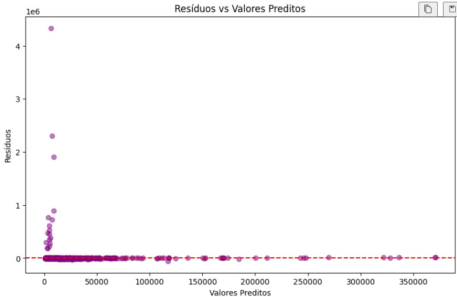
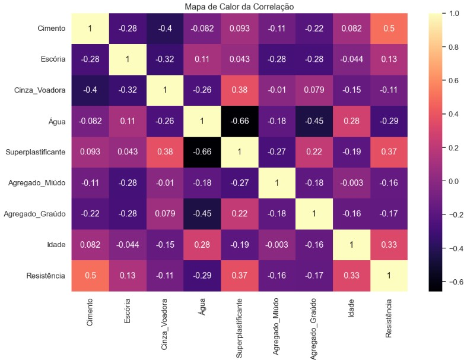
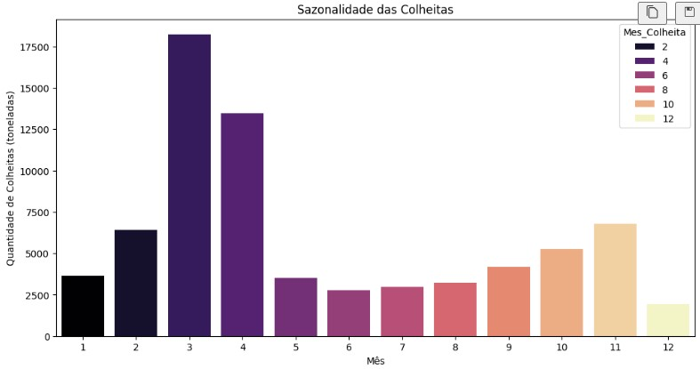

Sobre Mim
Analista de Dados com background em Engenharia Civil e mais de 10 anos de experiência em ambientes de alta complexidade técnica — de grandes obras de infraestrutura a projetos de monitoramento meteo-oceanográfico e Customer Success.
Atuo na interseção entre dados e decisões estratégicas, desenvolvendo pipelines, dashboards executivos e modelos preditivos com Python, SQL, Power BI e Streamlit. Meu diferencial está em traduzir dados em linguagem de negócio: já apresentei resultados para diretorias em empresas como Bureau Veritas, Grupo EcoRodovias e HidroMares by SGS, onde aplico analytics para simulação de cenários, automação de cálculos e estruturação de propostas comerciais.
Domino inglês em nível avançado (C1) e tenho certificações em Google Cloud e Salesforce Development, o que me permite atuar com times globais e stacks modernas.
Projetos





Experiência Profissional
- Elaboração de orçamentos técnicos e comerciais para soluções meteo-oceanográficas e monitoramento em tempo real.
- Levantamento de custos diretos e indiretos (mão de obra, embarcações, equipamentos e serviços terceirizados).
- Estruturação de propostas comerciais com análise de riscos, premissas e condições contratuais.
- Consolidação de históricos de custos para aumentar previsibilidade e reduzir tempo de resposta.
- Analytics (Excel, Power BI, SQL, Python) para simulação de cenários, automação de cálculos e apoio à decisão.
- Apresentação executiva de resultados para gestores e clientes.
- Definição e monitoramento de KPIs, SLAs e métricas para projetos de TI.
- Coleta, limpeza e integração de dados de múltiplas fontes (Jira, ServiceNow, SQL, APIs).
- Desenvolvimento de dashboards e relatórios executivos em Power BI, Tableau e Google Data Studio.
- Automação de rotinas analíticas com Python, SQL e ETL.
- Apoio a squads ágeis e áreas de negócio, traduzindo requisitos em soluções de dados.
- Análises preditivas para previsão de demandas e identificação de gargalos.
- Storytelling com dados para públicos técnicos e executivos.
- Análise de dados de compras para identificar tendências e padrões.
- Dashboards e KPIs em Excel, SQL e Power BI para monitoramento de gastos.
- ETL dos dados de pesquisa e governança do banco de dados.
- Suporte à equipe de compras e relacionamento com fornecedores nacionais e internacionais.
- Análises quantitativas de viabilidade e performance (Stage Gates) com dados financeiros e técnicos.
- Curvas ABC, Curvas S e histogramas integrados a painéis de controle.
- Manutenção de banco de dados de preços de insumos com consultas e validações recorrentes.
- Relatórios técnicos que apoiavam decisões estratégicas da diretoria.
- Estimativas orçamentárias com análise de dados históricos e simulações de cenários.
- Banco de dados de projetos técnicos e contratos da fase final da UHE.
- Análises hidrológicas com séries temporais de vazão do Rio Madeira.
- Extração e interpretação de dados técnicos para laudos e defesas em ações judiciais.
- Modelos de orçamento baseados em dados históricos e comparativos de mercado.
- Dashboards físico-financeiros com cronogramas e curva S.
- Controle de indicadores de produtividade e custos durante execução de obras.
Habilidades
Python, SQL, Excel Avançado, Power BI, Tableau, Google Data Studio
Estatística, Regressão, Machine Learning, CRISP-DM, scikit-learn, Pandas, NumPy
ETL, Pipelines, APIs, Streamlit, FastAPI, Docker, Git, Google Cloud, AWS
Agile (Scrum), Kanban, CRISP-DM, storytelling com dados
Apex, Lightning Web Component, Flow Builder
Orçamentos, Gestão de Contratos, Suprimentos, Viabilidade Técnica
Certificações
- Data Analytics & Power BIPreditiva Analytics
- Google Cloud Platform: Inteligência ArtificialFundação FAT
- Salesforce DevelopmentFundação FAT
- Excel para Análise de DadosPreditiva Analytics
Educação
- Engenharia Civil Instituto Mauá de Tecnologia (2009–2017) · Conclusão: Universidade Nove de Julho (2019/2020) Estatística Aplicada · Cálculo Numérico · Gestão de Projetos
- Curso de Ciência de Dados Preditiva Analytics (2024–2025) Machine Learning · Visualização de Dados · Big Data